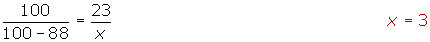

Arithmetic Mean Problems
1The numbers 4.47 and 10.15 are added to a set of 5 numbers whose mean is 7.31. What is the mean of the new set of numbers?
2A dentist records the number of cavities in 100 children from a school. The information obtained is summarized in the following table:
| No. of cavities | fi | ni |
| 0 | 25 | 0.25 |
| 1 | 20 | 0.2 |
| 2 | x | z |
| 3 | 15 | 0.15 |
| 4 | y | 0.05 |
1. Complete the table to obtain the values of x, y, z.
2. Calculate the average number of cavities.
3Complete the missing data in the following statistical table:
| xi | fi | Fi | ni |
| 1 | 4 | 0.08 | |
| 2 | 4 | ||
| 3 | 16 | 0.16 | |
| 4 | 7 | 0.14 | |
| 5 | 5 | 28 | |
| 6 | 38 | ||
| 7 | 7 | 45 | |
| 8 |
Also, calculate the mean.
4Consider the following data: 3, 8, 4, 10, 6, 2.
1. Calculate its mean and variance.
2. If all the above data was multiplied by 3, what would the new mean and variance be?
5 The result of throwing two dice 120 times is represented by the table:
| Sums | 2 | 3 | 4 | 5 | 6 | 7 | 8 | 9 | 10 | 11 | 12 |
| No. of Times | 3 | 8 | 9 | 11 | 20 | 19 | 16 | 13 | 11 | 6 | 4 |
1. Calculate the mean and standard deviation.
2. Find the percentage of values in the interval (x − σ, x + σ).
6The heights of the players (in centimeters) from a basketball team are represented by the table:
| Height | [170, 175) | [175, 180) | [180, 185) | [185, 190) | [190, 195) | [195, 2.00) |
| No. of players | 1 | 3 | 4 | 8 | 5 | 2 |
Calculate:
1. The mean.
2. The median.
3. The standard deviation.
4. How many players are above the mean plus one standard deviation?
7The result of throwing one dice 200 times is represented by the following table:
| 1 | 2 | 3 | 4 | 5 | 6 | |
| fi | a | 32 | 35 | 33 | b | 35 |
Determine the value of a and b knowing that the average score is 3.6.
8Given the absolute cumulative frequency table:
| Age | Fi |
| [0, 2) | 4 |
| [2, 4) | 11 |
| [4, 6) | 24 |
| [6, 8) | 34 |
| [8, 10) | 40 |
1. Calculate the arithmetic mean and standard deviation.
2. Calculate the difference between the values that are the 10 central ages?
1
The numbers 4.47 and 10.15 are added to a set of 5 numbers whose mean is 7.31. What is the mean of the new set of numbers?
2
A dentist records the number of cavities in 100 children from a school. The information obtained is summarized in the following table:
| No. of cavities | fi | ni |
| 0 | 25 | 0.25 |
| 1 | 20 | 0.2 |
| 2 | x | z |
| 3 | 15 | 0.15 |
| 4 | y | 0.05 |
1. Complete the table to obtain the values of x, y, z.
The sum of the relative frequencies must be equal to 1:
0.25 + 0.2 + z + 0.15 + 0.05 = 1
0.65 + z = 1 z = 0.35
The relative frequency of the data equals the absolute frequency divided by 100, which is the sum of the absolute frequencies.

| No. of caries | fi | ni | fi · ni |
| 0 | 25 | 0.25 | 0 |
| 1 | 20 | 0.2 | 20 |
| 2 | 35 | 0.35 | 70 |
| 3 | 15 | 0.15 | 45 |
| 4 | 5 | 0.05 | 20 |
| 155 |
2. Calculate the average number of cavities.
3
Complete the missing data in the following statistical table:
| xi | fi | Fi | ni |
| 1 | 4 | 0.08 | |
| 2 | 4 | ||
| 3 | 16 | 0.16 | |
| 4 | 7 | 0.14 | |
| 5 | 5 | 28 | |
| 6 | 38 | ||
| 7 | 7 | 45 | |
| 8 |
Also, calculate the mean.
Table
First row:
F1 = 4
Second row:
F2 = 4 + 4 = 8 
Third row:

Fourth row:
N4 = 16 + 7 = 23
Fifth row:

Sixth row:
28 + n8 = 38 n8 = 10 
Seventh row:
Eighth row:
N8 = N = 50 n8 = 50 − 45 = 5 
| xi | fi | Fi | ni | xi · fi |
| 1 | 4 | 4 | 0.08 | 4 |
| 2 | 4 | 8 | 0.08 | 8 |
| 3 | 8 | 16 | 0.16 | 24 |
| 4 | 7 | 23 | 0.14 | 28 |
| 5 | 5 | 28 | 0.1 | 25 |
| 6 | 10 | 38 | 0.2 | 60 |
| 7 | 7 | 45 | 0.14 | 49 |
| 8 | 5 | 50 | 0.1 | 40 |
| 50 | 238 |
Arithmetic Mean
4
Consider the following data: 3, 8, 4, 10, 6, 2.
1. Calculate its mean and variance.
2. If all the above data was multiplied by 3, what would the new mean and variance be?
| xi | xi2 |
| 2 | 4 |
| 3 | 9 |
| 4 | 16 |
| 6 | 36 |
| 8 | 64 |
| 10 | 100 |
| 33 | 229 |
1
2

5
The result of throwing two dice 120 times is represented by the table:
| Sums | 2 | 3 | 4 | 5 | 6 | 7 | 8 | 9 | 10 | 11 | 12 |
| No. of Times | 3 | 8 | 9 | 11 | 20 | 19 | 16 | 13 | 11 | 6 | 4 |
1. Calculate the mean and standard deviation.
2. Find the percentage of values in the interval (x − σ, x + σ).
| xi | fi | xi · fi | xi2 · fi |
| 2 | 3 | 6 | 12 |
| 3 | 8 | 24 | 72 |
| 4 | 9 | 36 | 144 |
| 5 | 11 | 55 | 275 |
| 6 | 20 | 120 | 720 |
| 7 | 19 | 133 | 931 |
| 8 | 16 | 128 | 1024 |
| 9 | 13 | 117 | 1053 |
| 10 | 11 | 110 | 1100 |
| 11 | 6 | 66 | 726 |
| 12 | 4 | 48 | 576 |
| 120 | 843 | 6633 |
1
2
x − σ = 4.591 x + σ = 9.459
The values in the interval (4.591, 9.459) are those relating to the amounts of 5, 6, 7, 8 and 9.
11 + 20 + 19 + 16 + 13 = 79
6
The heights of the players (in centimeters) from a basketball team are represented by the table:
| Height | [170, 175) | [175, 180) | [180, 185) | [185, 190) | [190, 195) | [195, 2.00) |
| No. of players | 1 | 3 | 4 | 8 | 5 | 2 |
Calculate:
1. The mean.
2. The median.
3. The standard deviation.
4. How many players are above the mean plus one standard deviation?
| xi | fi | Fi | xi · fi | xi2 · fi | |
| [1.70, 1.75) | 1.725 | 1 | 1 | 1.725 | 2.976 |
| [1.75, 1.80) | 1.775 | 3 | 4 | 5.325 | 9.453 |
| [1.80, 1.85) | 1.825 | 4 | 8 | 7.3 | 13.324 |
| [1.85, 1.90) | 1.875 | 8 | 16 | 15 | 28.128 |
| [1.90, 1.95) | 1.925 | 5 | 21 | 9.625 | 18.53 |
| [1.95, 2.00) | 1.975 | 2 | 23 | 3.95 | 7.802 |
| 23 | 42.925 | 80.213 |
Mean

Median

Standard Deviation
4
x + σ = 1.866+ 0.077 = 1.943
This value belongs to a percentile that is in the penultimate interval.


There are only 3 players above x + σ.
7
The result of throwing one dice 200 times is represented by the following table:
| 1 | 2 | 3 | 4 | 5 | 6 | |
| fi | a | 32 | 35 | 33 | b | 35 |
Determine the value of a and b knowing that the average score is 3.6.
| xi | fi | xi · fi |
| 1 | a | a |
| 2 | 32 | 64 |
| 3 | 35 | 125 |
| 4 | 33 | 132 |
| 5 | b | 5b |
| 6 | 35 | 210 |
| 135 + a + b | 511 + a + 5b |
a = 29 b = 36
8
Given the absolute cumulative frequency table:
| Edad | Fi |
| [0, 2) | 4 |
| [2, 4) | 11 |
| [4, 6) | 24 |
| [6, 8) | 34 |
| [8, 10) | 40 |
1. Calculate the arithmetic mean and standard deviation.
2. Calculate the difference between the values that are the 10 central ages?
| xi | fi | Fi | xi · fi | xi2 · fi | |
| [0, 2) | 1 | 4 | 4 | 4 | 4 |
| [2, 4) | 3 | 7 | 11 | 21 | 63 |
| [4, 6) | 5 | 13 | 24 | 65 | 325 |
| [6, 8) | 7 | 10 | 34 | 70 | 490 |
| [8, 10) | 9 | 6 | 40 | 54 | 486 |
| 40 | 214 | 1368 |
Mean and Standard Deviation
2
The 10 students represent 25% of the central distribution.

Find: P37.5 y P62.5.

The 10 central ages are in the interval: [4.61, 6.2] .